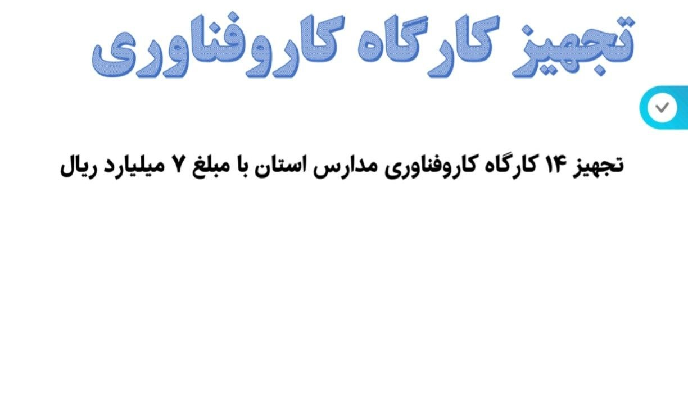
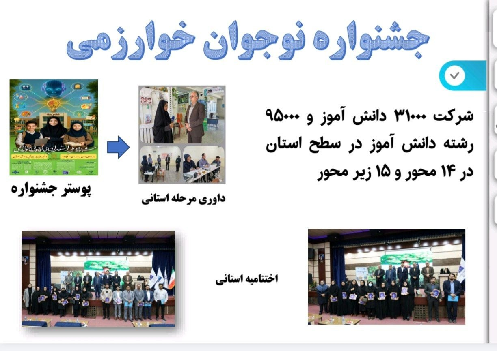
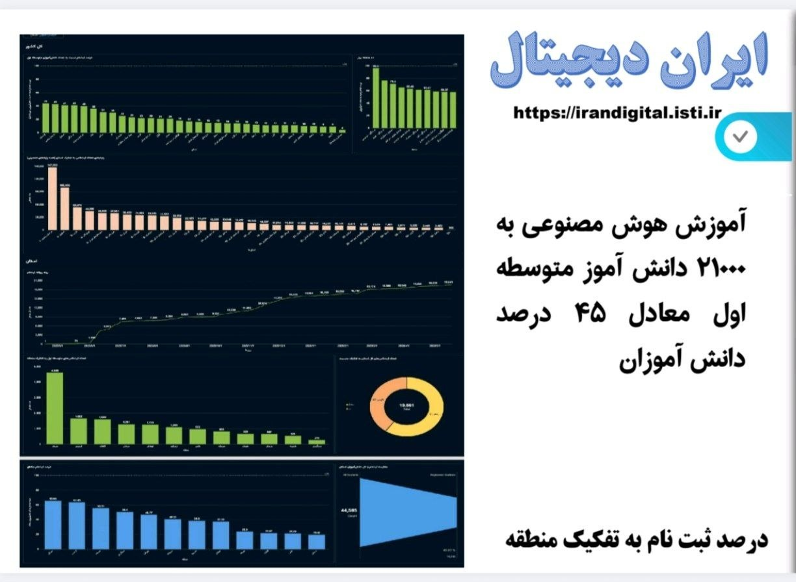

دورهٔ اول متوسطه: کشف استعدادها
آموزش هوش مصنوعی، جشنواره خوارزمی، طرح داناب و…
وسعت دورهٔ اول متوسطه
شبکهای گسترده از مدارس و کلاسها که خانهٔ دوم دهها هزار نوجوان استان است
دستاوردهای دوره
از جشنوارهٔ نوجوان خوارزمی تا آموزش هوش مصنوعی؛ سالی پُربار برای نوجوانان استان
جشنوارهٔ نوجوان خوارزمی
۳۱٬۰۰۰ دانشآموز پایهٔ هفتم تا نهم در جشنوارهٔ نوجوان خوارزمی شرکت کردند.
آموزش هوش مصنوعی
۲۱٬۰۰۰ دانشآموز در سرفصلهای هوش مصنوعی آموزش دیدند.
طرح داناب (نجات آب)
مطالعه و بازنگری الگوی مصرف آب با محوریت مدارس و دانشآموزان.
طرح «هر دانشآموز یک مهارت»
۸٬۲۰۰ دانشآموز در طرح مهارتآموزی «هر دانشآموز یک مهارت» شرکت کردند.
تجهیز کارگاههای کاروفناوری
تجهیز ۱۴ کارگاه کاروفناوری با اعتبار ۷ میلیارد ریال.
کلاسهای تقویتی تابستانی
جبران افت یادگیری و آمادهسازی دانشآموزان برای سال تحصیلی جدید.
تاسیس اولین دبیرستان متوسطه اول وابسته به دانشگاه
برای اولین بار نخستین دبیرستان متوسطه اول وابسته به دانشگاه تاسیس شد .
نگاهی از نزدیک
لحظههایی از فعالیتهای دورهٔ اول متوسطه در مدارس استان



گام بعدی سفر: دورهٔ دوم متوسطهٔ نظری
پیشگیری از ترک تحصیل، توسعهٔ متوازن رشتهها و برگزاری آزمونهای شبهنهایی
ادامهٔ گزارش